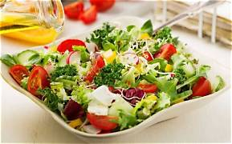

At RESTO, we believe that great food doesn't have to be complicated. It should be fresh, tasty, and made with love. Started with a simple idea — to serve real food that makes you feel good — RESTO brings you a menu full of favorites: J uicy Burgers, Cheesy Pizzas, Creamy Pastas, Crispy Fries, and our special Fresh Salads.Why Our Salads Are Special? Our salads are our pride. We use only farm-fresh vegetables, hand-picked fruits, and house-made dressings. No frozen, no preservatives. Just 100% fresh ingredients chopped daily to give you the perfect balance of health and taste. Whether you are a fitness lover or just want a light meal, our salads are made for you.